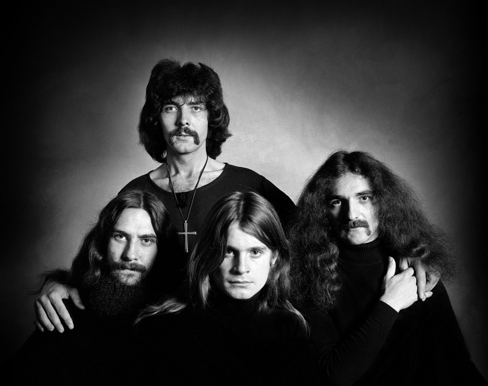

História da banda
Black Sabbath foi uma banda de heavy metal britânica formada no ano de 1968 em Birmingham pelo guitarrista e principal compositor Tony Iommi, o baixista e principal letrista Geezer Butler, o vocalista Ozzy Osbourne e o baterista Bill Ward. Desde o início, a banda passou por diversas mudanças na formação, com o guitarrista Iommi sendo o único presente em todas elas. Originalmente era uma banda de blues rock, que logo adotou o nome Black Sabbath e começou a incorporar ocultismo e histórias de terror em suas letras, além de usar guitarras com baixa afinação. Apesar desses dois temas serem comuns, eles também compunham canções que tratavam de instabilidade social, corrupção política, os perigos do abuso de drogas e profecias apocalípticas resultantes de guerras.
A formação original teve seu fim em 1979 com a demissão de Osbourne, devido a seu vício em álcool e uso de outras drogas. Ele foi substituído por Ronnie James Dio, antigo vocalista do Rainbow. Após gravarem dois álbuns com Dio, o Black Sabbath enfrentou inúmeras mudanças de integrantes durante as décadas de 80 e 90, que incluíram os vocalistas Ian Gillan, Glenn Hughes, Ray Gillen e Tony Martin, bem como vários bateristas e baixistas. Em 1992, Iommi e Butler juntaram-se a Dio e o baterista Vinny Appice para a gravação do disco Dehumanizer. A formação original reuniu-se em 1997, quando gravaram o disco ao vivo Reunion. O último álbum de estúdio do Black Sabbath, intitulado 13, foi lançado em junho 2013 e contou com Iommi, Butler e Osbourne. Entre 2016 e 2017 fizeram a "The End Tour", turnê que marcou oficialmente o fim da carreira do grupo.
O Black Sabbath é usualmente citado como um dos pioneiros do heavy metal.O grupo ajudou a definir o gênero com lançamentos como Paranoid (1970), Master of Reality (1971) e Heaven and Hell (1980), tendo vendido mais de 70 milhões de cópias durante sua carreira. Eles foram definidos pela MTV como "a maior banda de heavy metal de todos os tempos", e foram classificados em 2º na lista dos "100 maiores artistas de hard rock" do canal VH1. A revista Rolling Stone colocou-os na posição 85 de sua lista dos "100 maiores artistas de todos os tempos". A banda foi introduzida ao UK Music Hall of Fame em 2005, ao Rock and Roll Hall of Fame em 2006 e já venceram duas vezes o Grammy Awards na categoria Melhor Performance de Metal.